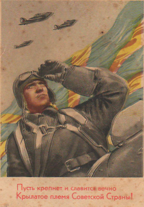
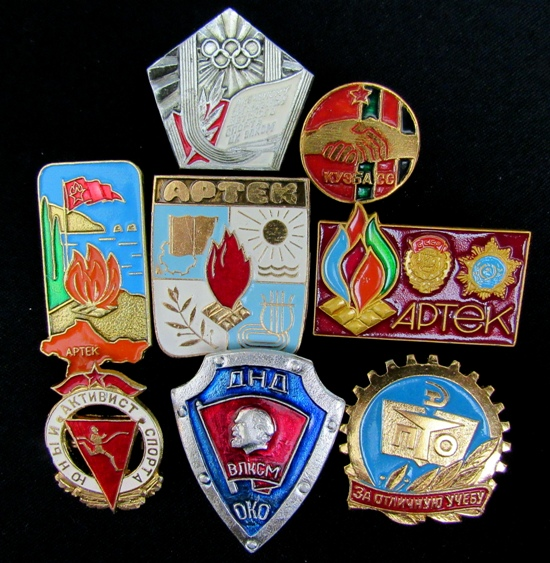
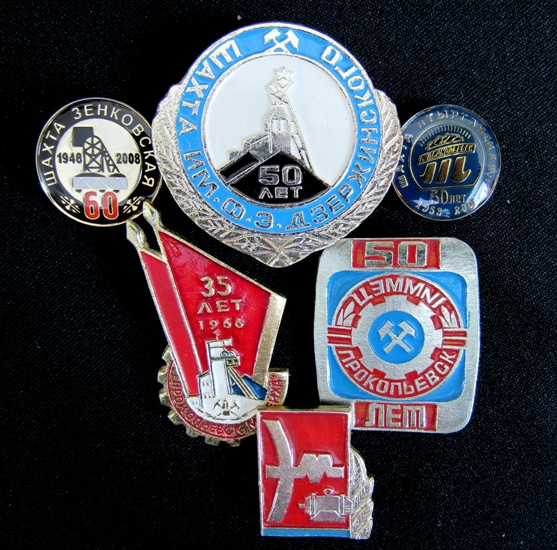

Фондовые коллекции
На конец 2014 года фонды музея насчитывают более 20000 единиц. В музее собраны предметы этнографии, археологии, палеонтологии, естественнонаучной коллекции, нумизматики, оружие, техника, подлинные предметы, связанные с освоением космоса, личные вещи, документы и фотографии участников Великой Отечественной войны, фарфоровые изделия, произведения живописи и графики, редкие книги, документы и фотографии.
Комплектование музейного фонда осуществляется в соответствии с научной концепцией отбора предметов по краеведению Прокопьевска, Прокопьевского района и Кузбасса, быту жителей региона, истории промышленных предприятий, о знаменательных исторических событиях и т. д.
Основу коллекции «Живопись» составляют картины, выполненные маслом, гуашью, акварелью местными профессиональными и самодеятельными художниками. Среди них работы художников В. Н. Ковякина, М. В. Перепечина, Г. В. Стаценко, В. И. Самошкина, В. В. Морозова, О. Д. Комарова, Н. Елесиной. Самые распространённые сюжеты – пейзаж, виды Прокопьевска, производственная тематика, портрет.
В состав коллекции «Графика» входят линогравюры художников А. С. Холодова, О. Д. Комарова, М. В. Перепечина, Г. В. Стаценко, а также плакатная графика.
Коллекция «Скульптура» представлена 4 предметами. В коллекцию входят бюсты известных земляков – первого стахановца Кузбасса, кавалера Ордена Ленина И. А. Борисова, советского геолога и палеонтолога В. Я. Яворского, деятеля революционного и партизанского движения П. Ф. Сухова, и скульптура Михайлы Волкова – первооткрывателя кузнецких углей.
Собрание «Предметы быта, этнографии, декоративно-прикладного искусства» включает в себя историко-бытовые предметы различной тематики и состоит из нескольких коллекций: «Этнография», «Быт», «ДПИ».
Этнографическая коллекция представлена предметами, характерными для таких этносов как шорцы, телеуты, русские.
Шорская коллекция включает предметы быта и традиционного языческого культа шорцев, одного из коренных народов Кузнецкого края, орудия труда и охоты, домашнюю утварь, подлинный бубен шамана начала ХХ в.
Телеутская коллекция представлена предметами традиционной женской одежды телеутов (платье «кунек», шуба «телен», пальто «сырмал» и пр.) и украшениями (праздничный нагрудник «тоштёк», пояс «кур», серьги, подвески).
Русская этнографическая коллекция состоит из крестьянских бытовых предметов (ткацкий станок, рубели, утюги, вальки, чугунки, самовары, прялки, веретена, ухваты, чесалки, ручная мельница, маслобойка и др.), сельскохозяйственных орудий (вилы, грабли, элементы упряжи, плуг и др.), образцов национальной одежды (рубашки женские, сорочки), предметов рукоделия (полотенца, рушники, скатерти, кружева и т. д.)
Коллекция изделий декоративно-прикладного искусства включает в себя разнообразные изделия из бересты, выполненные прокопьевскими мастерами.
Коллекция «Быт» входит как составная часть в коллекцию «Прочее» и включает в себя, в основном, предметы быта советского периода – мебель, кухонная утварь, посуда, фарфор, стекло, текстиль и т.д.
В состав коллекции «Нумизматика» музея входят серебряные монеты XVIII-XIX вв., награды участников Великой Отечественной войны, трудовые награды и знаки, ведомственные и областные награды, значки.
Особый интерес представляет набор медалей «Прокопьевск – жемчужина Кузбасса» и серебряная медаль имени Н. М. Пржевальского «За путешествия».
Многочисленная коллекция значков состоит из общегосударственных и ведомственных знаков, а также значков, посвященных событиям из жизни города.
Коллекция «Археология» охватывает периоды присутствия человека на Кузнецкой земле от эпохи камня до железного века.
Археологические материалы эпохи палеолита и неолита представлены артефактами Кузедеевской и Дегтяревской стоянок, предметами Андроновской и Ирменской культур.
Эпоха бронзы представлена предметами тагарской культуры. Об эпохе железа свидетельствуют материалы, полученные в результате раскопок курганной группы Ур-Бедари. Представлены предметы вооружения тюркского воина IX – XI вв.
Коллекция «Редкая книга» насчитывает 39 единиц хранения. Среди них богослужебные старопечатные книги конца XIX – начала XX в. Из книг светского содержания можно выделить издание в 2-х томах «Историческая физика» 1908 г., иллюстрированный журнал литературы «Нива» 1901 г., книга «От шахты до океана» - о Почетном гражданине Прокопьевска контр-адмирале Бабушкине А. С., написанная его дочерью, книги, изданные до 1939 г., а также изданные малыми тиражами.
В немногочисленную коллекцию «Оружие» входят образцы холодного и огнестрельного оружия. Огнестрельное оружие не может быть использовано по основному назначению в результате специальной пробивки.
Музейное собрание «Документы» включает в себя несколько коллекций «Документы», «Фотографии», «Фонодокументы».
Коллекция «Документы» представлена документами биографического характера, а также документами, содержащими историческую информацию о многих субъектах города.
Многочисленные мемориальные фонды включают в себя документы деятелей советского периода истории. Среди них большую часть занимают фонды ученых В. И. Яворского и Н. А. Чинакала.
О репрессиях 1930-1950-х гг. в городе свидетельствуют мемориальные фонды семей Гауса, Сыч-Сычука, Гусева, Волынского.
Боевой и трудовой подвиг прокопчан в годы Великой Отечественной войны отражен в большом фонде ветеранов ВОв, в том числе Героев Советского Союза.
Тематическая коллекция фонда включает в себя архивные материалы о дивизиях, формировавшихся из прокопчан, документы и фотографии бойцов, которые сражались в составе этих формирований на фронтах Великой Отечественной войны.
Трудовые заслуги города в военные годы отражены в материалах о знаменитых прокопьевских шахтерах, Героях Социалистического Труда, женщинах, заменивших мужчин в шахтах, медицинских работниках, самоотверженно работавших в эвакогоспиталях.
Большой интерес представляет уникальная коллекция документов и фотографий Прокопьевского аэроклуба, кропотливо собранных вдовой инструктора Негриева В. С.
О бурном промышленном развитии Прокопьевска рассказывают обширные материалы по истории предприятий города. К ним относятся предприятия добывающей промышленности, завод «Электромашина», Прокопьевский завод шахтной автоматики, швейная фабрика «Горнячка», фарфоровый завод.
Коллекция «Фотография» представлена бытовыми, производственными, пейзажными снимками, а также фотопортретами горожан. В фотофонде хранится подборка фотоснимков деятелей партии, комсомола, коллективов промышленных предприятий, различных учреждений города.
Коллекция «Фонодокументы» включает патефонные пластинки и виниловые диски советского периода.
Естественно–научная коллекция представлена материалами по живой и неживой природе.
Палеонтологическая часть коллекции состоит из костей и зубов мамонта, шерстистого носорога, бизона, исполинского оленя. Кости этих животных были найдены на территории нашего города во время разработки полезных ископаемых. Имеются образцы с отпечатками фауны, в том числе трилобитов, брахиопод, кораллов.
Палеоботаническая часть состоит из набора окаменевших стволов деревьев, отпечатков папоротников, плауновидных.
Зоологическая коллекция представлена чучелами птиц и зверей, коллекцией насекомых.
В геологической коллекции представлены образцы минералов России, полезных ископаемых Кузбасса и углей Прокопьевского района.
Коллекция «Предметы истории техники» включает в себя различные виды часов (настенные, настольные, карманные часы XX в.), фотоаппаратов и фототехники советского производства, звуковоспроизводящей аппаратуры (патефоны, радиолы, электрофоны, приёмники и др.), кинопроекторов, швейных машин, шахтерских светильников, отбойных молотков и др.
Коллекция «Предметы печатной продукции» содержит энциклопедии, словари и справочные издания, методическую литературу, художественную и специализированную литературу с автографами авторов, а также буклеты, календари, открытки, марки.
Ряд музейных коллекций входит в общее собрание под названием «Прочее». Сюда включены музейные коллекции: «Быт», «Изделия Прокопьевского фарфорового завода», «Одежда», «Иконы», «Сувениры» и др.
Активно формируется музейная коллекция «Изделия Прокопьевского фарфорового завода», как уникального единственного предприятия такого рода в Западной Сибири.
Коллекция «Одежда» достаточно обширна. В нее входят мундиры и костюмы Почетных шахтеров города, кители контр-адмирала А. С. Бабушкина и летчика-космонавта дважды Героя Советского Союза Б. В. Волынова и др.
В коллекции «Иконы» присутствуют живописные иконы, иконы, выполненные на бересте, а также бронзовые иконы в технике металлопластики и др.
Коллекция «Сувениры» состоит из предметов, полученных от различных делегаций в связи со знаменательными датами города и промышленных предприятий, а также сувениров, свидетельствующих о широких интернациональных связях Прокопьевска.
Также в коллекцию «Прочее» входит собрание поддужных колокольчиков середины XIX в.
Красный день календаря
23 февраля – День Советской Армии и военно-морского флота. Сначала в этот праздник чествовали людей военных. В Советском Союзе в армии служили почти все юноши, и праздник стал отмечаться практически в каждой семье. Появился обычай поздравлять 23 февраля всех мужчин.
С открыток на нас смотрели мужественные солдаты и маленькие мальчики, мечтающие ими стать.

Наименование: почтовая карточка
Воениздат Министерства Вооруженных Сил СССР
Художник: Е. М. Казаков
Дата изготовления: 1948 г.
Коллекция фалеристики

Казалось бы, что может быть проще обычного значка, который мы прикалываем к одежде, сумке или другой вещи? Сейчас мало кого можно удивить наличием значка, он не является отличительным знаком, часто не несет никакой информативной нагрузки, а используется как дополнение к образу человека. Однако, так было далеко не всегда.
История значков уходит своими корнями далеко в прошлое, во времена средневековых турниров и европейских дворов. Стремление человека выделяться из основной массы является почти инстинктивной первичной потребностью, заложенной еще на заре человеческого общества. Существует версия, что прародителем значка были еще римские монеты, на которых изображались животные и которые служили его обладателю вместо герба. Они были неимоверно редкими и ценными.

Постепенно традиция изготовления отличительных знаков трансформируется, меняется и сам внешний вид значка. Он становится меньше, приобретает не только информативные, но и декоративные функции.
В нашей стране наиболее емким на выпуск значков был советский период. После Октябрьской революции популярность значков захватила советское пространство. Требовалась массовость во всем, необходимость обеспечить огромное население сувенирной продукцией. Значок подошел идеально. Малозатратный, подходящий к любому поводу, яркий – настоящий символ коммунизма. Значки штамповали в невероятных количествах и по различным поводам:начиная от вступления в пионерскую организацию и заканчивая событиями всесоюзного масштаба. Доступность, массовость и в то же время уникальность сделали его основным предметом для обмена и коллекционирования.
В краеведческом музее имеется обширная коллекция значков советского и российского периодов, которая насчитывает более 1200 единиц хранения и постоянно пополняется усилиями сотрудников и дарителей. Юбилейные, комсомольские, именные, наградные, военные, значки предприятий, организаций и многие другие находятся в музейных фондах.
Назад